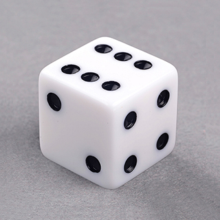

Como Empezar?
En el juego que desarrollarás ahora será el de un dado al que al ser pulsado gira y cae en una cara cualquiera.
Inicia la aplicación Pocket code.
Agrega un fondo de la librería de medios llamado “platform".
Agrega el objeto dado-mov-1 y en sus apariencias agrega a los demás objetos: dado-mov-2, dado-mov-3, dado-mov-4,dado-mov-5,dado-mov-6.
En la línea de comandos del objeto “dado-mov-1” agrega los siguientes guiones (los que se pueden observar en el video).
Depura y prueba el programa y analiza los bloques de programación.
Recursos Multimedia
Codigo y Resultado Final: